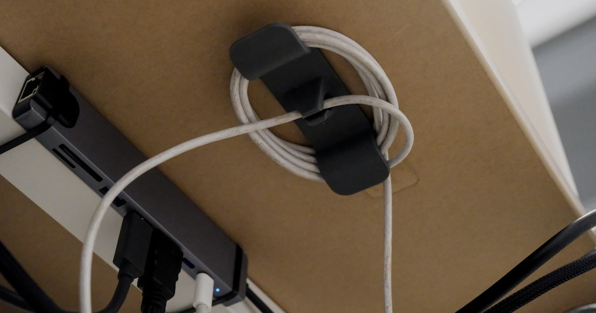

Kabelsalat unterm Schreibtisch endlich lösen

Foto: Unsplash
Ladekabel, Monitorkabel, Netzteil, Maus, Tastatur – unterm Schreibtisch sammelt sich schnell ein Kabelknäuel, das nicht nur unordentlich aussieht, sondern auch beim Staubwischen und Umräumen nervt. Die Lösung braucht weder Elektriker noch viel Zeit: Mit vier einfachen Schritten und ein wenig Zubehör lässt sich der Kabelsalat dauerhaft in den Griff bekommen.
Schritt 1: Kabel bündeln, bevor du sie versteckst
Bevor überhaupt etwas an der Tischplatte befestigt wird: Kabel, die zusammen zum selben Gerät laufen (z. B. Monitor-Strom und Monitor-HDMI, oder Netzteil und Ladekabel), mit Klettbändern bündeln. Das reduziert die Menge an Einzelkabeln spürbar, bevor du überhaupt ein Produkt kaufst – und macht jeden nachfolgenden Schritt einfacher, weil weniger einzelne Stränge verlegt werden müssen. Wiederverwendbare Klettbänder sind Kabelbindern aus Kunststoff vorzuziehen: Sie lassen sich öffnen, wenn ein Gerät getauscht oder ein Kabel verlängert wird.
Schritt 2: Kabelkanal unter der Tischplatte
Ein Kabelkanal-Set mit Klebehaken lässt sich ohne Bohren unter der Tischplatte anbringen. Die Kabel liegen darin auf Höhe der Tischkante statt frei auf dem Boden zu hängen – der größte optische Unterschied für den geringsten Aufwand. Vor dem Anbringen die Klebefläche der Tischplatte mit einem trockenen Tuch reinigen, sonst hält der Klebehaken schlechter. Miss die Kabelstrecke grob aus, bevor du ein Set bestellst: Die meisten Sets lassen sich zwar kürzen, aber ein zu kurzer Kanal deckt am Ende nicht die ganze Strecke ab.
Kabelkanal-Sets mit Klebehaken bei Amazon ansehen** Affiliate-Link
Schritt 3: Mehrfachsteckdose fixieren
Statt die Steckdosenleiste lose auf dem Boden liegen zu lassen, mit einem Klettband oder Clip an der Tischkante, einem Tischbein oder der Kabelkanal-Rückseite befestigen. Das verhindert, dass sie beim Saugen im Weg liegt oder Kabel wieder herausrutschen. Wer mehrere Steckdosenleisten nutzt (z. B. eine für den Schreibtisch, eine für Zubehör), sollte sie klar räumlich trennen – das erleichtert später die Fehlersuche, falls ein Gerät keinen Strom bekommt.
Schritt 4: Überschüssige Kabellänge aufwickeln
Kabel sind fast immer länger als nötig. Mit Kabelclips oder einfachen Klettbändern lässt sich die Überschusslänge zu einer kleinen Schlaufe aufwickeln, statt sie lose durchhängen zu lassen. Wichtig dabei: Die Schlaufe nicht zu eng binden, das kann bei manchen Kabeltypen auf Dauer die Isolierung oder die Adern im Inneren belasten. Eine lockere Handvoll Durchmesser reicht meist aus.
Checkliste: In 30 Minuten zum aufgeräumten Kabelsystem
- Bestandsaufnahme: Alle Kabel unterm Tisch einmal kurz sortieren – was gehört zusammen?
- Bündeln: Zusammengehörige Kabel mit Klettband zu einem Strang zusammenfassen
- Klebefläche reinigen: Tischplatte vor dem Anbringen von Klebehaken trocken abwischen
- Kabelkanal anbringen: Entlang der Tischkante, auf Höhe statt am Boden
- Steckdosenleiste fixieren: Mit Clip oder Klettband an Tischbein oder Kanal befestigen
- Überschuss aufwickeln: Locker, ohne die Kabel scharf zu knicken
Häufige Fragen
Muss ich für ein aufgeräumtes Kabelmanagement bohren?
Nein. Kabelkanäle und Kabelclips mit Klebehaken oder Klettverschluss halten auf glatten, sauberen Oberflächen zuverlässig und lassen sich rückstandsfrei wieder entfernen – ideal für Mietwohnungen.
Wie oft sollte ich das Kabelmanagement nachziehen?
Nach dem ersten Einrichten hält ein gutes System lange. Ein kurzer Check lohnt sich aber immer dann, wenn ein neues Gerät dazukommt oder der Schreibtisch umgestellt wird – dann verschieben sich Kabelwege.
Was tun mit sehr langen Kabeln, die ich nicht kürzen kann?
Überschusslänge nicht abschneiden, sondern zu einer lockeren Schlaufe aufwickeln und mit einem Klettband oder Kabelclip fixieren. So bleibt das Kabel bei Bedarf (z. B. Umzug des Geräts) weiter nutzbar.
Fazit
Kein Kabelmanagement-System muss perfekt sein – schon die Kombination aus Bündeln, einem Kanal unter der Tischplatte und einer fixierten Steckdosenleiste macht optisch und praktisch den größten Unterschied, in unter 30 Minuten.